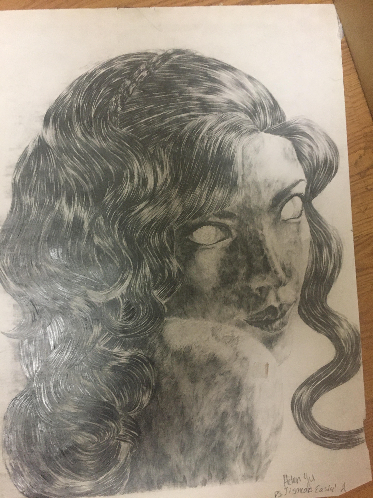
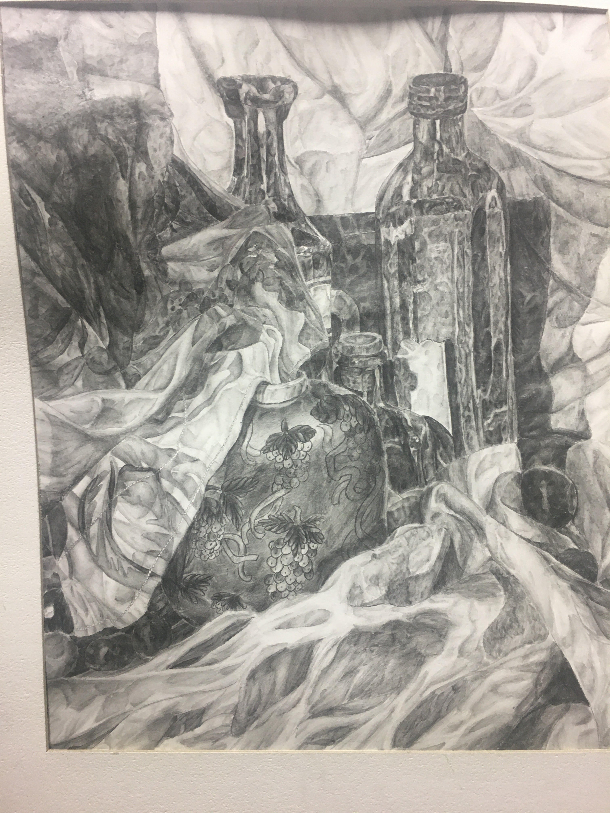
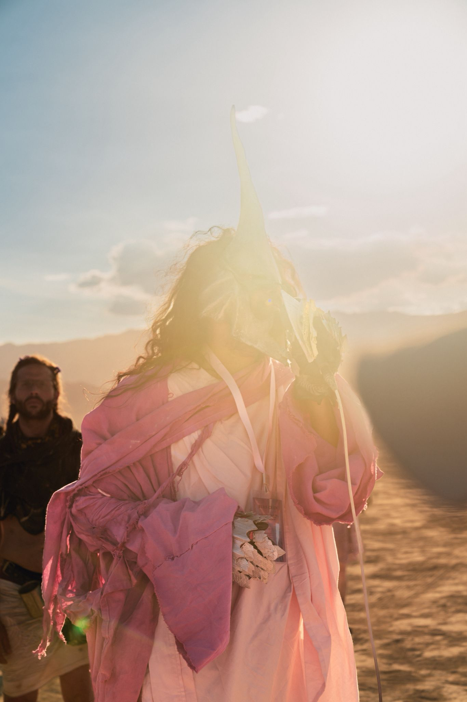
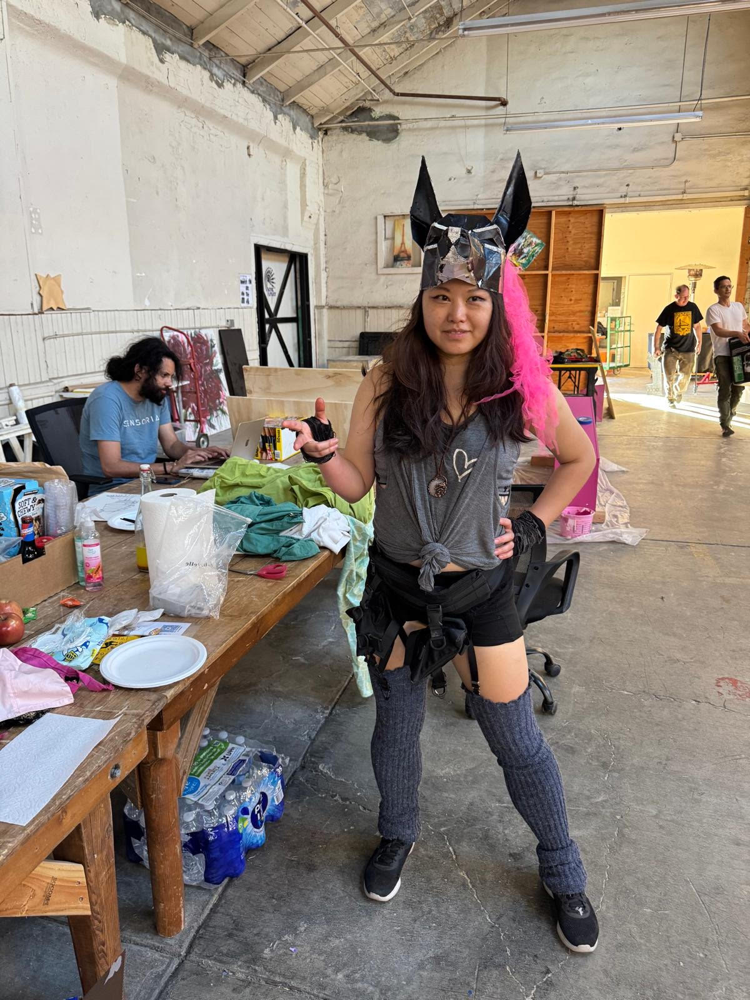

Pencil Drawings
Traditional graphite sketches exploring form, texture, and light. Each drawing captures intimate moments through careful observation and delicate line work.
Carmen (2006)
Carmen is a pencil drawing inspired by the opera Carmen, capturing her spirit of passion, fire, and independence. Through expressive lines and dramatic contrast, the piece reflects her intensity, confidence, and emotional depth. The drawing explores themes of desire, freedom, and strength, embodying the powerful presence that defines her character.
Still Life (2003)
This still life piece explores the intensity present in every moment, even in the quietest scenes. Through careful observation, shading, and composition, the drawing highlights subtle details that are often overlooked. The work reflects how ordinary objects can hold emotion, energy, and meaning, inviting the viewer to slow down and experience the depth within stillness.
Interactive Installations
Immersive experiences that respond to viewer presence and movement. Each installation creates a unique dialogue between technology and human perception.
Ragnarök: The Severance of Body and Mind

Ragnarök: The Severance of Body and Mind is a visual metaphor for the fracture between body and mind during mental illness. Nine concentric pentagons form a fractal spiral of the Nine Realms, with the brain as Asgard, symbolizing neural collapse, rupture, and the possibility of renewal.
Ongoing Project - Burning Man Sculpture:
View Project Progress
Costume Design
Wearable art that transforms the human form through innovative materials and construction. Each piece explores the intersection of fashion, sculpture, and performance.
Grim Reaper
This costume represents a grim reaper figure—a guide to the afterlife. I designed and created both the costume and the armor. The idea behind this piece is to encourage people to reflect on "masks" they wear and what they choose to reveal underneath. As character moves forward, they surrender these layers, symbolizing a journey toward their true inner self. This transformation unfolds as a kind of funeral march.
I was the lead costume designer for the Mona Funeral March, creating this piece as part of a larger exploration of death, transformation, and the rituals surrounding passage between worlds.
Anubis Head
The Anubis head is also one of my original pieces, and both works are featured in the documentary Mona Die! Die! Die!. These pieces explore ancient symbolism of death, judgment, and transition between worlds, drawing from Egyptian mythology and reinterpreting it through contemporary artistic practice.
Both pieces featured in the documentary:
Mona Die! Die! Die!
Artistic Philosophy
My artistic practice explores the convergence of mathematical precision and creative intuition. Through generative algorithms and fractal geometry, I create works that reveal the inherent beauty of mathematical patterns while embracing the randomness and unpredictability that make each piece unique.
The fractals in my work serve as a metaphor for the infinite complexity found in nature, art, and human consciousness. Each piece invites viewers to explore the delicate balance between order and chaos, determinism and free will, the known and the unknown.
© 2026 Helen Yu | Art & Creativity